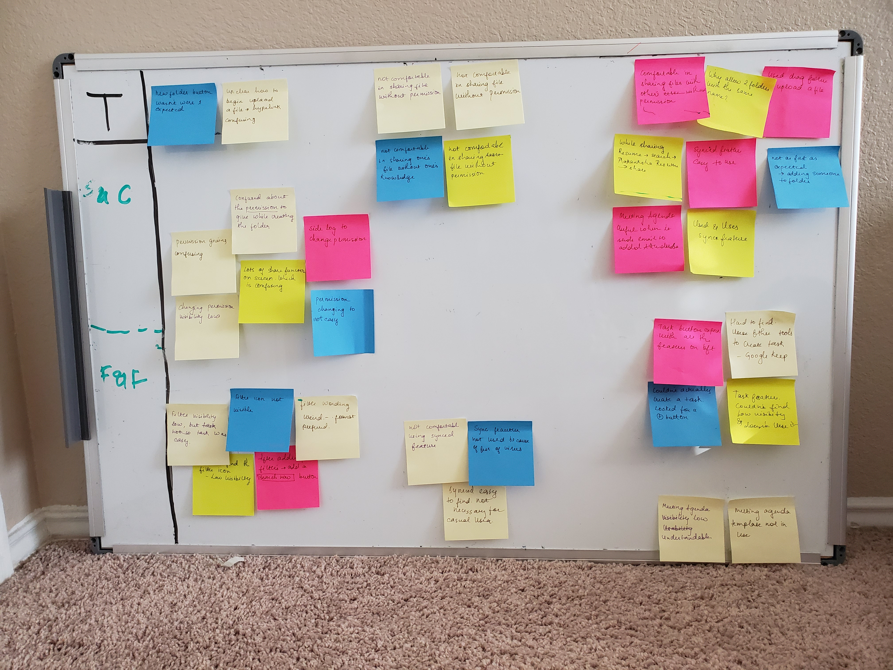
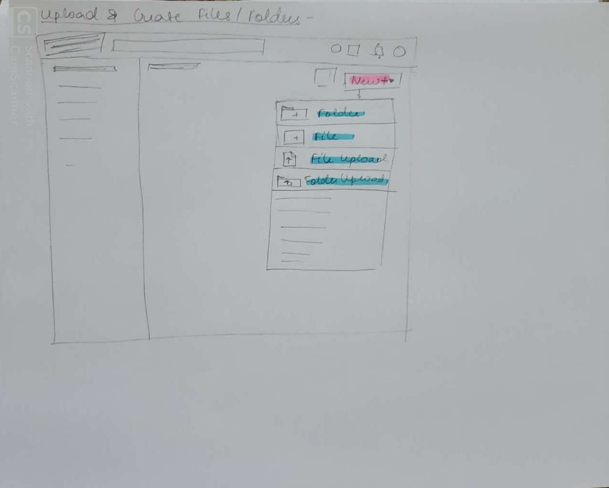
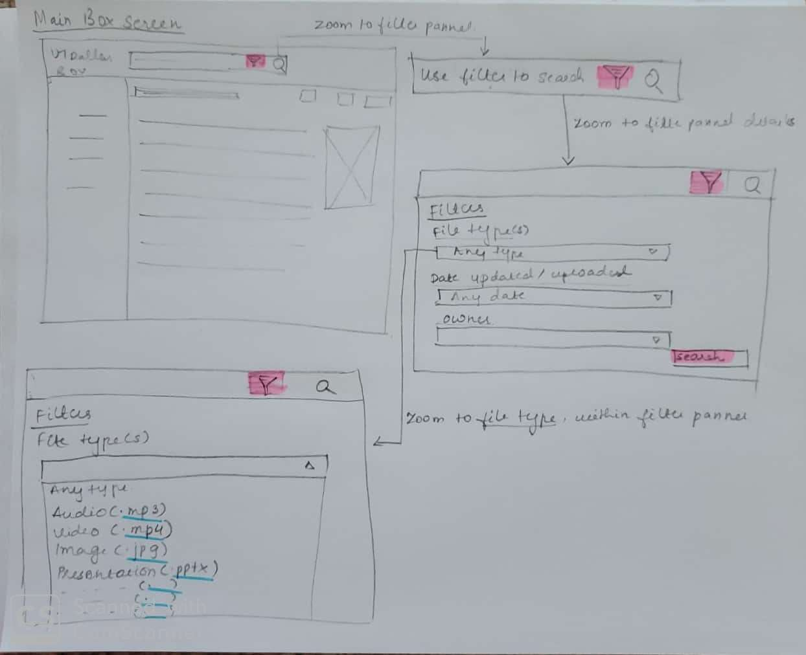
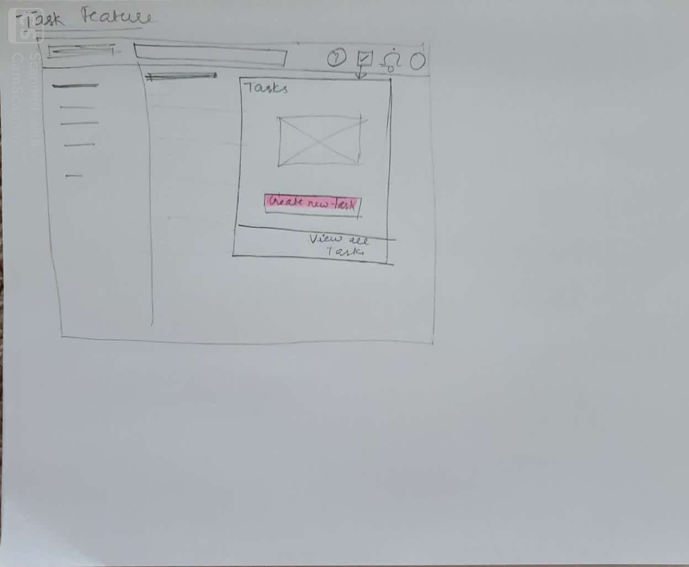
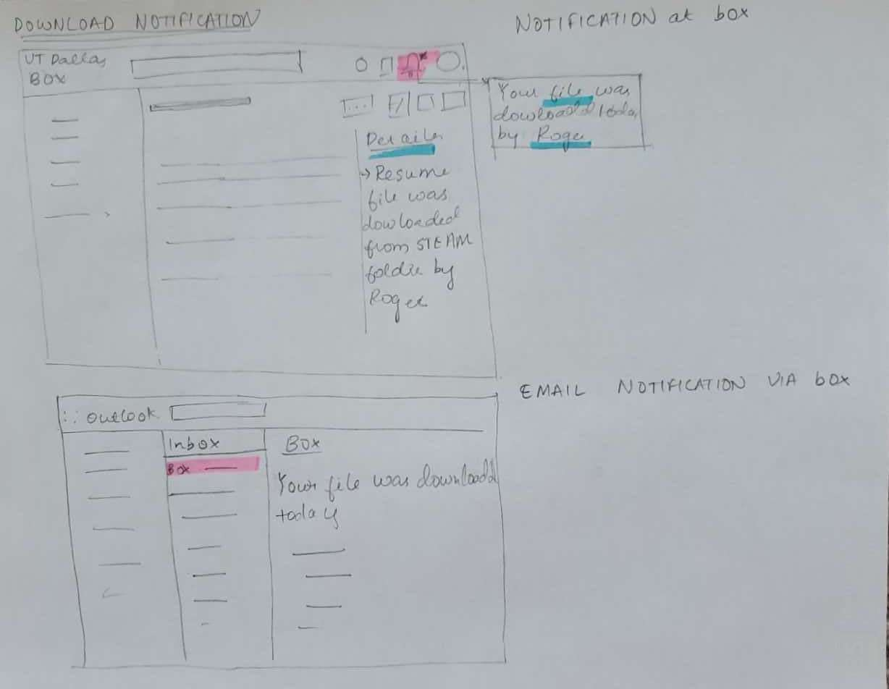

Usability Testing of Box
Box is a popular platform for secure content management, workflow, and collaboration
Disclaimer: I do not work for Box. This case study was purely used as a tool for learning various usability methodologies.
I conducted a case study to challenge myself to improve Box’s user flow. Being a student at the University of Texas at Dallas, Box is one of the apps that I use a lot, for most of the classes, including the seminar course I was enrolled for in the fall’19 semester. Through research, I was able to identify a few pain-points that users were experiencing. I then prototyped some solutions and validated them with user data.
Research
To begin my research, I started to look at a few competitors or similar platforms, analyzing UI, UX, User flow, key features and reviews to identify the common problems. There are many platforms like Box which offer space for collaborating work, like, Microsoft Sharepoint, Microsoft Exchange server and Slack.
While Microsoft has maximum share in the market- Microsoft Sharepoint has- 33.62% and Microsoft Exchange server has 25.08%; box is still managing its market share to 10.58%(reference).
Google Drive, Dropbox and Microsoft one drive are also considered as its competitors, in terms of file sharing, creating and collaborating.

My Goal through this case study is-
- To test the usability of Box,
- To understand and analyse the pain points of ‘Box’.
- Suggest a different and better tool for shared communications
Scope
I categorised my research into two parts, based on the ultimate user and business goal:
1) Sharing and Creating Files and Folders
2) Features and Filters
Step 1: Usability Testing:
For this case study, I have combined the concept of usability testing and guerrilla testing.
Also, for the purpose of better understanding the data, I have gathered qualitative and quantitative data. This usability testing was performed with 5 users, all of them are enrolled in the Arts, Science and Humanities seminar course, at UTD. Therefore, all of them had used Box before.
They are all given a list of 10 questionnaires, broadly divided into two tasks(goals) stated above.
Step 2: Synthesis and working with the data:
Synthesis, in Human-Centered Design, is a collaborative process of sensemaking, which leads to
creating a coherent summary of all the data gathered during the design research.
I used an affinity mapping method to find patterns in my observations and group them.
I watched each screen recordings and recorded the insights on (virtual) post-it notes.
I segmented each user into different columns, then I wrote down the major pain points on a sticky note.
Step 3: Making Sense of Data to understand pain points(Empathizing):
Then I focus on the most important 4 features to iterate on, which were taken from affinity maps. The 4 pain points were-

1) Upload & Create New files/folder confusing. (⅗ user faced this problem)
2) Sharing file not confidential(all 5 users faced this problem)
3) Task Feature- Couldn’t create a new task (all 5 users faced this problem)
4) Usability of Filter very poor (all 5 users faced this problem
Step 4 : Prototyping (Ideate)
I came up with possible solutions to the above found four problems/ pain points. I did some preliminary validation on the Lo-Fi UI sketches and used the feedback to refine my sketches. These Lo-fi UI sketches are recommendations based on my usability testing, of course there are business factors which are yet to be considered.




Summary
Through this case study, I learned the value of the user experience research process. I understood the needs of the users through the survey and conversations which gave me an in-depth insight into the pain points.
Usability tests revealed that
● 3 out of 5 users thought that file uploading and creating is not very effective and is confusing to an extent
● All 5 users weren’t convinced about the confidentiality of sharing files and folders
● All 5 users couldn’t find and create tasks
● All 5 users found the visibility and functionality of filter weak.
I came up with solutions to the above-discovered problems via Lo-Fi sketches for each.
Note: The business plays a very important role in the next steps, i.e. validating and implementing the study. As a UX researcher, I can pinpoint the pain points, but there are few features which are lucrative the way they are designed. So I don’t claim that these changes would help business but would definitely help the users.